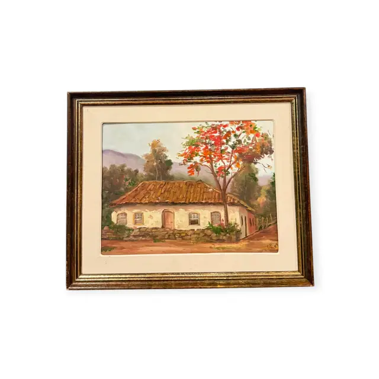
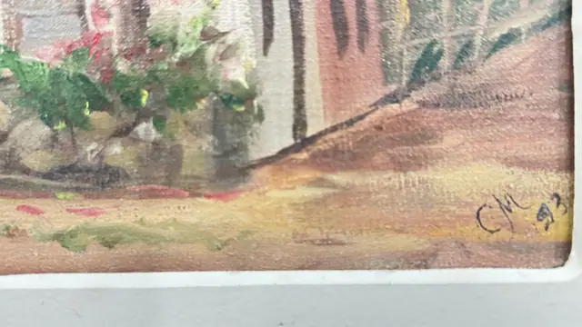

Paintings & Prints
Adobe Cottage with Flame Tree, Signed, Framed, 1993
· 1993 if the date reading is correct
Price Upon Request


About the Item
A small plein-air style landscape of a long adobe cottage with a weathered terracotta pantile roof, its shuttered windows and plank door facing a low dry-stone wall. A slender tree bursts into scarlet and orange bloom over the roofline, and soft blue-grey hills close the distance behind olive and sage foliage. The paint is applied in short, loose, unblended strokes with the canvas weave reading through the thin passages, and the palette stays warm and dusty - cream, terracotta, olive and mauve. Presented floated under a cream mat. Medium: oil on canvas. Signed lower right of the canvas, in dark paint, reading "C.M. 93". Inscribed on the reverse or mount: C.M. 93. Condition: Canvas appears sound with no visible losses; the frame is rubbed and the gilding worn along the edges.
Details
- Creation Year:
- 1993 if the date reading is correct
- Dimensions:
- Height: 17.5 in (44.45 cm)
Width: 21.25 in (53.98 cm)
outside of frame - Medium:
- oil on canvas
- Period:
- 20Th
- Condition:
- Offered in the condition shown in the photographs.
- Reference Number:
- VO-74
- Documentation:
- no certificate photographed
- Gallery Location:
- C.M. 93